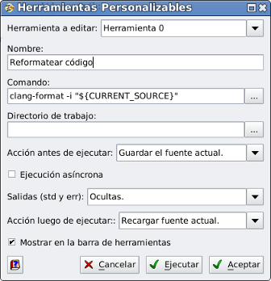

Diálogo Herramientas Personalizables
ZinjaI permite definir hasta diez herramientas personalizadas generales y cinco adicionales por proyecto. Es decir, comandos del menu y/o botones de la barra de herramientas que ejecutan programas o abren documentos definidos por el usuario. Las generales serán visibles en todo momento y se guardarán en la configuración de ZinjaI, mientras que las de proyecto estarán asociadas a un proyecto, se guardarán en el archivo de proyecto del mismo, y solo serán visibles mientras se trabaje sobre ese proyecto. Esta pensado para generar accesos rapidas a herramientas auxiliares del proceso de desarrollo, o documentacion y referencias especificas.

Para agregar o definir una herramienta debe utilizar alguno de los items Configurar del submenu Herramientas Personalizables del menu Herramientas. Esta accion abre el cuadro de dialogo de configuracion de las herramientas. Otra forma mas directa de acceder a este cuadro para modificar una de estas herramientas es haciendo click con el boton derecho sobre la misma en la barra de herramientas. Exactamente el mismo cuadro de diálogo se utiliza para configurar tanto las herramientas generales como las de un proyecto (cuando se abre el cuadro se abre para mostrar solo uno de los dos grupos).
El cuadro presenta en la parte superior una lista desplegable para alternar entre cada una de las diez herramientas (0 a 9). Cuando selecciona alli una herramienta puede ver o modificar los demas campos afectando a la misma. Al aceptar los cambios se modifican todas las herramientas que editadas, no solo la que esta visible en ese momento.
Por cada herramienta puede definir:
- Nombre: es el texto que aparece en el menu con el que se identifica a la herramienta. Puede ser cualquier cadena.
- Comando: es el comando a ejecutar. Para confeccionar el comando puede utilizar variables como ${MINGW_DIR} para referirse al directorio de instalacion del compilador (solo Windows), ${CURRENT_SOURCE} para referirse a la ruto completa del fuente que zinjai este mostrando al momento de ejecutar el comando, ${PROJECT_PATH} para referirse a la carpeta del projecto abierto, ${PROJECT_BIN} para referirse al ejecutable del projecto y ${BROWSER} para referirse al navegador configurado en ZinjaI.
- Correr en terminal (solo en GNU/Linux): indica si debe ejecutarse esta comando en una consola y esta debe ser visible. Para ello se usa el comando de terminal definido en la pestaña Rutas 2 del cuadro de Preferencias
- Ocultar ventana (solo Windows): indica si la ventana del programa a ejecutar debe ocultarse. Esto es util, por ejemplo, para ejecutar programas de consola sin que se vea la ventana de la terminal.
- Mostrar en la barra de herramientas: indica si debe agrgarse el icono a la barra de herramientas Herramientas. En caso contrario solo se mostrar en el menu Herramientas. Notar que la barra de herramientas Herramientas debe estar visible. Si no la ve puede activarla desde el cuadro de Preferencias o desde el menu Ver.